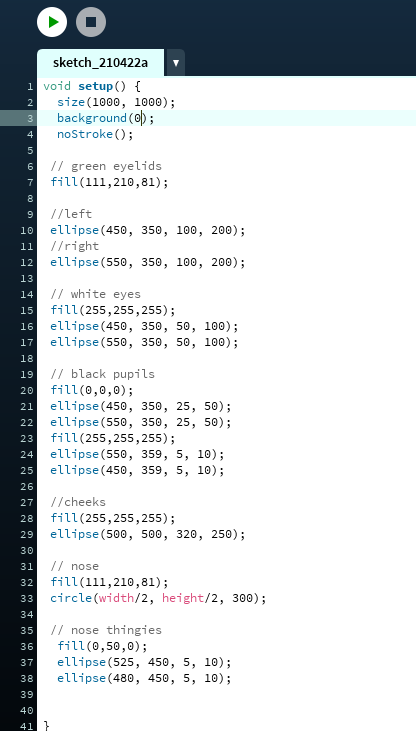

korte uitleg
Dit project bestaat uit 3 kleinere projecten.
Elk van deze kleinere projecten had zijn eigen doel.
Maar in het algemeen was het doel om te "tekenen" door gebruik te maken van code.
Of dit nu was wanneer je je muis beweegt in het venster,
bestaande uit gepaaide elementen. Zoals cirkels. Of als het beweegt.
Ik gebruikte het programma genaamd "Processing" voor dit.

Leer doelen
- Werken met een nieuwe taal : Javas.
- Werken met een nieuw programma : Processing
- Creatief zijn ( veel mogelijkheden )
- Werken met een nieuw programma : Processing
- Creatief zijn ( veel mogelijkheden )

Conclusie
Ik vond dit project leuk,
omdat het me deed beseffen dat er veel
meer mogelijkheden zijn met coderen. Dit project was bruikbaar en
interessant ook omdat je kon zien hoe een klein
ding effect kon hebben op het hele project.